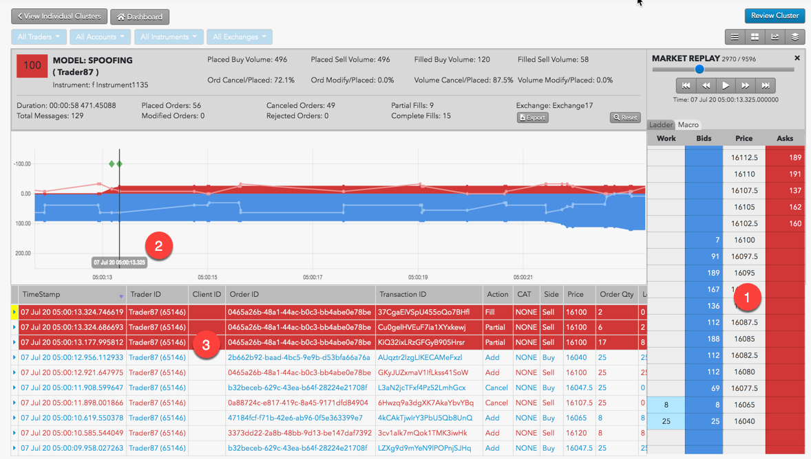
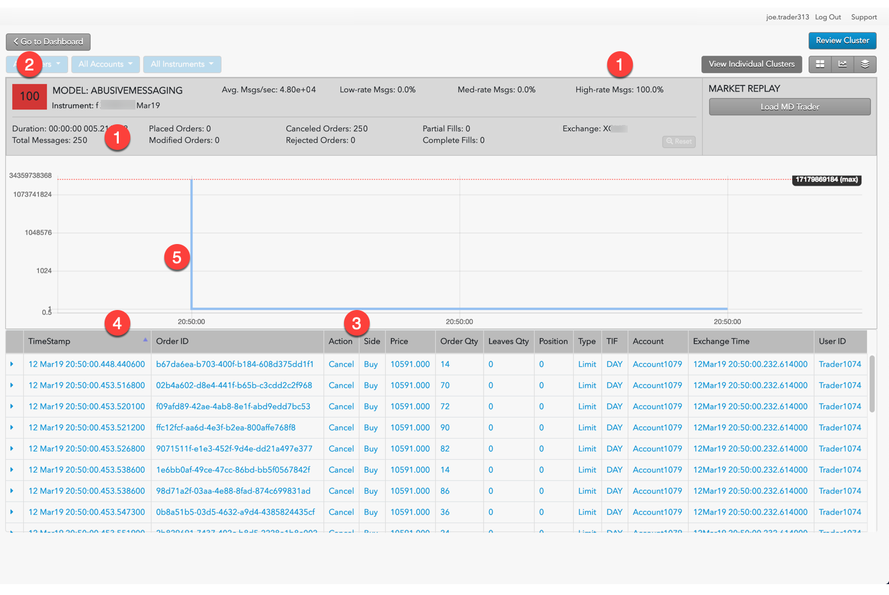

Security Configuration for Cisco Catalyst 9400 Switches
Reviewing Clusters Using Cluster Views
The method for reviewing clusters for problematic trading activities are unique to each type.
Spoofing
Use the Cluster Scorecard to get a closer look at the activity that triggered the spoofing score. The chart at the bottom of the scorecard can give you visual clues about the spoofing pattern. For example, the chart in the following scorecard for a cluster with a high spoofing score shows a potential flipping pattern.

The example shows the following:
- Trader is adding volume on the buy side to create the appearance of buy-side pressure.
- Trader adds a small Sell order, which immediately fills.
- Trader then cancels all outstanding Buy orders.
The chart shows activity based on order volume over time, but does not show the order prices and liquidity. Looking at the prices for the potential spoofing orders can help you determine whether the trader was placing those orders far off the market in an attempt to deceive traders.
From the Cluster Scorecard, you can click Market Replay to show how the orders interacted with the market at the various price levels.

The market replay shows the following:
- The price ladder shows the prices and liquidity in the market during the potential spoofing activity.
- The vertical line identifies the point of time during the market replay.
- Orders and fills that occurred around the specified time during the market replay.
Abusive Messaging
Use the Cluster Scorecard to get a closer look at the activity that triggered the abusive messaging score. The Cluster Statistics and Scorecard Metrics sections of the scorecard show the:
- Time duration of the cluster
- Total number of messages sent
- Percentages for different message rates
The chart at the bottom of the scorecard can give you visual clues about the abusive messaging pattern. For example, the chart in the following scorecard is for a cluster with a high percentage of high-rate messages over a very short time period.

- In just over five one-thousandth's of a second, the trader submitted over 25 order messages, 100% of which were considered to be submitted at a high rate.
- The meter indicates this cluster has a risk score of 100.
- The trader repeatedly submitted the same type of order.
- The exchange times indicated the messages were sent in micro-second intervals.
- The Burst Chart shows that for the first six-tenths of a second, the trader submitted messages at a rate of nearly 5,000 messages per second.
Wash Trading
Use the Cluster Scorecard to get a closer look at the activity that triggered the wash trading score. The Cluster Scorecard shows activity that could constitute a wash trade.

- Fills were executed on opposite sides of the market for the same order quantity.
- The two transactions were executed within the same millisecond.
- The two transactions were executed by the same trader ID.
Momentum Ignition
When investigating Momentum Ignition clusters with TT Score, you should focus on the:
- Number of distinct price levels used by aggressive orders.
- Quantity filled on the aggressive orders.
- Quantity filled on the opposite, or profit-taking, orders.
For example, if the Igniter Price Levels and the Ignites (Vol) metrics display large values, this indicates that the trader may have been attempting to ignite a price movement in a particular direction (buy or sell) in order to mislead other market participants or to create an artificial price. The Opp. Side (Vol) is a good indicator of whether or not the trader received advantageous fills on orders opposite the igniter orders that the trader would not have otherwise received without intentionally or recklessly sparking the price movement.
The order audit trail data on the Statistics Scorecard can then be used to verify all of the order information and the timing of the activity that was identified as potential Momentum Ignition.
The activity can then also be replayed with the Market Replay on the Cluster Scorecard.
Pinging
Use the Cluster Scorecard to get a closer look at the activity that triggered the pinging score, focusing on the audit trail:
- Review the audit trail for the creation of a series of small new orders at various price levels followed almost immediately by cancel events.
- Look for a change in trader behavior once the small orders begin to fill immediately after order entry. Specifically, look for larger aggressively priced orders being entered on the opposite side of the market (as the small orders) as soon as the small orders get filled. The use of a hyper-marketable limit order or a market order could be indicative of aggressive orders.
- Look in the audit trail to see if that aggressive order was filled and was followed by an even larger order on the same side of the market as the original small orders were placed.
- Compare the fill price of the final large order to that of the fill of the last small ping order. If the final large order filled at a better price than the original small ping orders, then it is likely that an abusive pinging occurred.